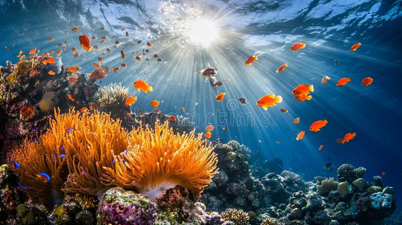
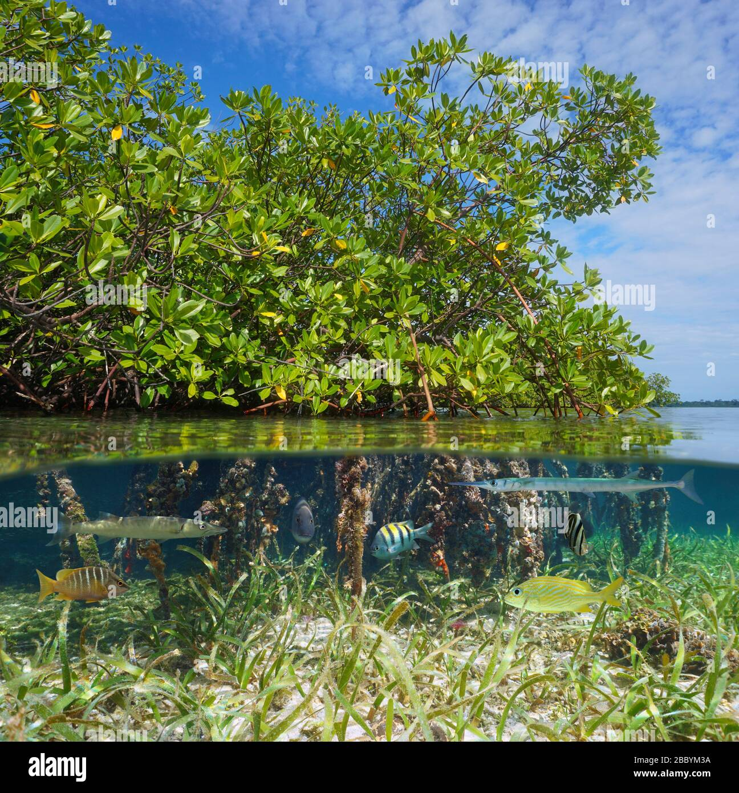
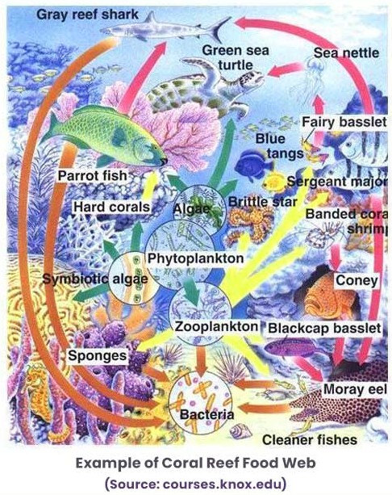
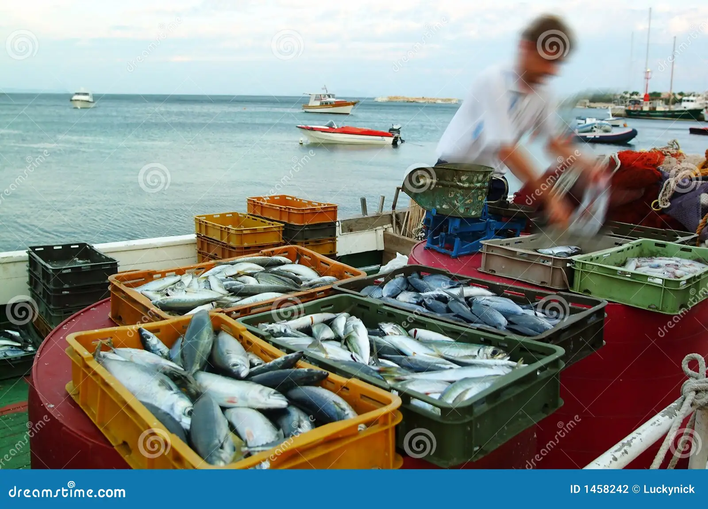

Coral Reef Ecosystems
Coral reefs, known as the rainforests of the sea, support over 25% of marine species despite covering less than 0.1% of the ocean floor. Built by calcium carbonate from coral polyps, these ecosystems host fish, invertebrates, and algae in symbiotic relationships. For example, zooxanthellae algae provide energy to corals via photosynthesis, while corals offer protection. Reefs serve as habitats, breeding grounds, and nurseries for species like clownfish, parrotfish, and sharks.
Coastal Marine Habitats
Coastal habitats like mangroves, seagrass beds, and estuaries connect land and sea. Mangroves stabilize shorelines and provide nurseries for juvenile fish. Seagrass beds support seahorses and dugongs while capturing carbon. Estuaries, where rivers meet the sea, foster diverse life like crabs and migratory birds. These habitats link to coral reefs, supporting species across life stages.
Marine Food Webs
Reefs and coastal habitats form the base of marine food webs. Herbivorous fish like parrotfish graze on algae, becoming prey for groupers or octopuses. Apex predators like sharks depend on this prey abundance. Coastal habitats produce biomass from decaying seagrass, feeding detritivores and small fish, which support larger predators. These ecosystems also export nutrients to deep-sea environments.
Human Dependence
Coastal ecosystems support human livelihoods through fisheries, providing food for millions. Reef fish like snapper and shellfish from estuaries are vital economically. Coral reefs drive tourism, attracting divers and generating revenue, like the Great Barrier Reef’s $6 billion contribution to Australia. These ecosystems also hold cultural value for indigenous communities, tying human survival to ocean health.